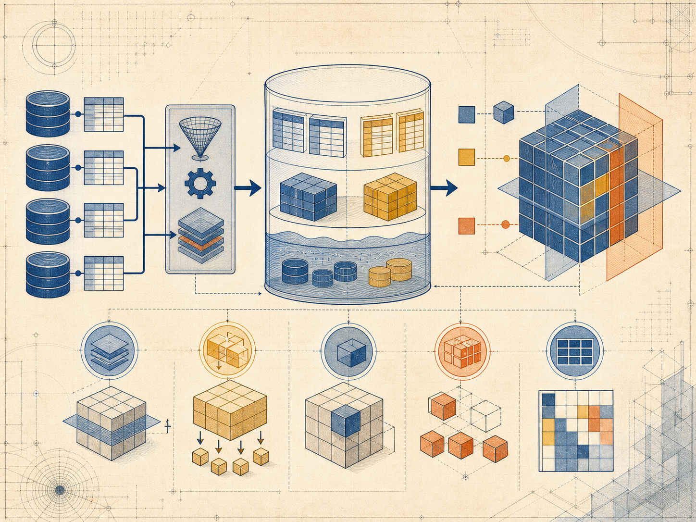
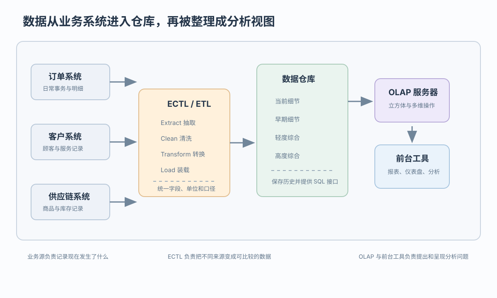
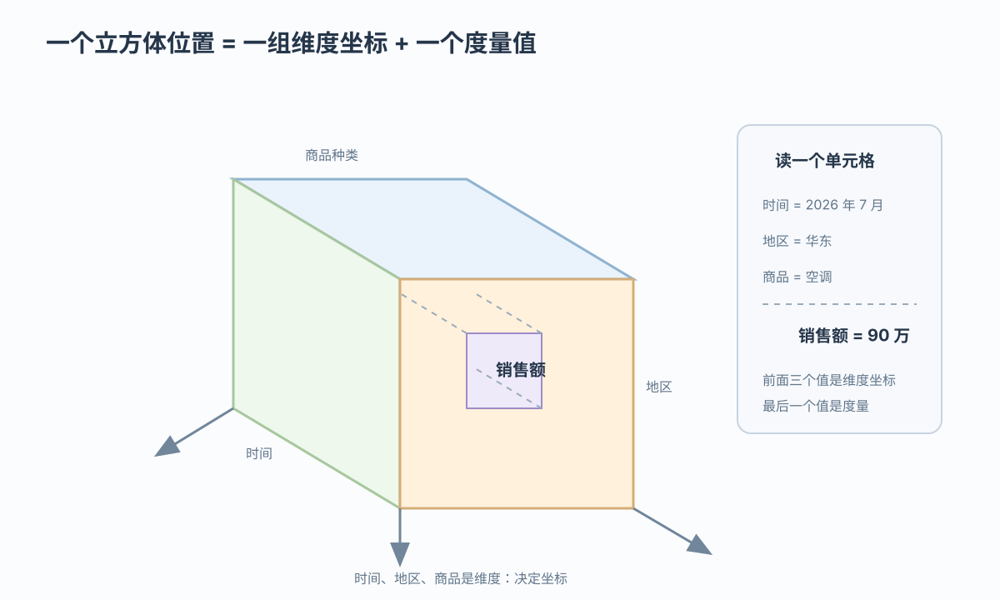

面向主题
围绕商品、顾客、地区等分析对象组织，而不是按单笔事务流程组织
数据仓库整合历史数据，OLAP 提供多维观察
 VER. 2608.3
Built with impress.js
VER. 2608.3
Built with impress.js
完成本节后，你应该能够
事务环境保证日常业务，分析环境扫描历史并聚合

| 维度 | OLTP | OLAP |
|---|---|---|
| 操作 | 细粒度记录查询和更新 | 大范围历史读取和聚合 |
| 驱动 | 事务和业务请求 | 管理决策问题 |
| 一致性 | 事务一致性严格 | 口径需一致，但可有刷新延迟 |
| 响应 | 快速且可预测 | 复杂且可能较长 |
传统架构通常把 OLTP 与 OLAP 放在不同环境；仓库刷新可能滞后，但指标定义和业务口径必须保持一致
电器销售可以按地区、商品和月份观察已完成订单
订单系统记录交易事实，仓库存储统一口径的历史分析数据；两者用途不同
它们共同决定仓库的组织和更新方式
围绕商品、顾客、地区等分析对象组织，而不是按单笔事务流程组织
统一金额单位、日期粒度、商品编号和业务口径
分析使用期间不做联机事务式修改；新时期仍可通过批量装载增加
持续装载新时期并保留历史变化，综合层随数据刷新或重算
“不可更新”是分析期间的工作方式，不是仓库生命周期内永不增加数据；“随时间变化”强调持续保留和追加历史
ECTL 分成抽取、清洗、转换和装载四步；工程上常合并清洗与转换
从订单、顾客和供应链系统取得记录
处理缺失、重复、冲突和异常
统一金额单位、日期粒度、商品编号和业务口径
写入仓库细节、综合层并维护历史
ECTL 把清洗与转换分列，ETL 常将清洗并入转换，ELT 把转换后置；三者都要统一语义并进行质量检查
细节会随时间沉淀，综合结果服务高频分析
| 级别 | 典型粒度 | 主要作用与取舍 |
|---|---|---|
| 当前细节 | 最近装入的订单明细 | 追查最新业务；数据量较大 |
| 早期细节 | 较早时期的订单明细 | 保留历史证据；访问频率可能较低 |
| 轻度综合 | 日／周 × 商品或地区 | 支持常用分析；仍保留较多细节 |
| 高度综合 | 月／地区 × 品类 | 快速回答概览问题；需要刷新或重算 |
当前细节会随时间转入早期细节；综合层与细节层并列服务不同粒度的查询。只有更细粒度数据仍被保留，才能下钻回明细
每一层解决不同的问题，接口把它们连接起来

电器销售中，时间、地区和商品是维度，销售额是度量

事实表存键和度量；维度表存属性与层级
它们改变视图或范围，不改写原始销售事实
固定一个维度取一个值：只看“华东”
在多个维度上选范围：华东 × 空调 × 2026 年第 3 季度
交换行列或轴：把地区从行换到列，比较方式改变
切片和切块选择子空间，旋转改变排列；聚合层级的变化放到上卷和下钻
例：沿时间和地区层级观察电器销售额
从日汇总到月、从城市汇总到地区；例如把每天销售额合计为月度销售额
从月展开到日、从地区展开到城市；依赖更细粒度事实仍被保存
下钻需要保留对应的细粒度事实；聚合方法随度量而定：销售额常用 sum，订单数用 count，客单价等指标要先说明平均口径
先明确关系组织，再比较多维存储
ROLAP 的基本结构：事实表保存维度键与度量，维度表保存描述属性和层级。星型模式让维度表直接围绕事实表；雪花模式再按层级拆分维表
| 方式 | 组织方式 | 典型特点 |
|---|---|---|
| MOLAP | 直接存多维数组与综合结果 | 多维读取直接；需要维护多维存储 |
| ROLAP | 事实表连接维度表，用关系操作映射立方体 | 接口灵活；连接与聚合需要优化 |
| HOLAP | 细节走关系组织，部分综合走多维组织 | 兼顾访问路径；维护路径更复杂 |
星型与雪花是关系组织方式，不与 MOLAP／ROLAP／HOLAP 同层级：星型连接较少但可能有冗余，雪花层级更规范但连接更多；慢变维还需要代理键和历史版本维护
判断从负载分工开始，再经过数据集成、粒度和多维模型
OLTP 保证日常事务，OLAP 扫描历史并聚合
ECTL／ETL／ELT 统一语义；细节和综合层服务不同粒度
事实粒度、维度、度量和时间层级支撑切片、切块、旋转、上卷、下钻
ROLAP 用事实表和维度表；星型、雪花与 MOLAP／HOLAP 是不同层次的组织选择
负载分工 → 数据集成 → 粒度与多维模型 → OLAP 操作 → 实现取舍